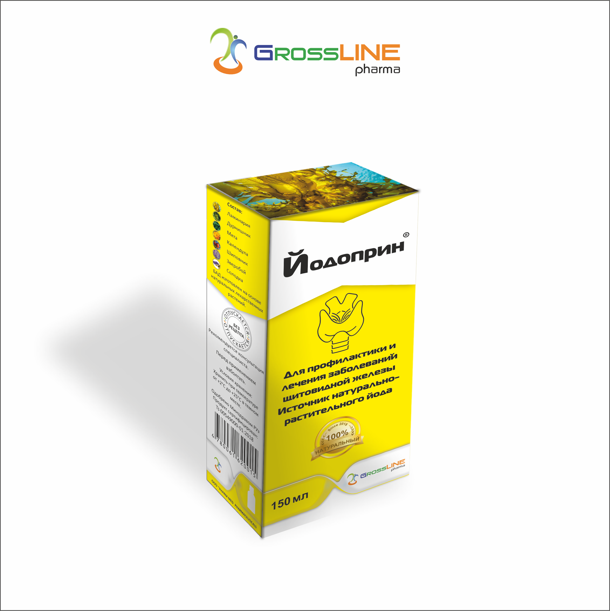

Телефон горячей линии:
(+99895)
177-17-71

Телефон горячей линии:
(+99895)
177-17-71


ИНСТРУКЦИЯ ПО ПРИМЕНЕНИЮ
ПРЕПАРАТА ЙОДОПРИН
(IODOPRIN)
Одобрено Минздравом
Республики Узбекистан
Продукт сертифицирован
Ts 27364374-001:2017
СОСТАВ И ФОРМА ВЫПУСКА
Сироп из растительных трав, с характерным запахом, по 150 мл – (1) Пластиковый флакон в картонной коробке; (2) Ложка-дозатор; (3) Инструкция по применению.
Состав: 1.Ламинария (Laminaria J.V.Lamour).
Основной источник соединений йода способствует стабильной выработке организмом гормонов щитовидной железы. Он также содержит фосфор, магний, кремний и ряд других полезных минералов.
2.Дурнишник (Xanthium strumarium).
Благодаря наличию йода отвары и настои обогащают организм полезными элементами, что особенно важно при эндокринных заболеваниях, а также обладают способностью регулировать работу щитовидной железы, стабилизировать гормональный фон.
3.Мята (Mentha Pipirita L.).
Применяется как вспомогательное средство к другим травам в составе препарата.
4.Календула (Flores Calendulae).
Он богат органическими веществами, которые снижают кровяное давление, улучшают обмен веществ и оказывают успокаивающее действие.
5.Шиповник (Rosa Canina).
Нормализует кровообращение в организме, а это само по себе предотвращает замедление сердечного ритма при дефиците йода.
6.Зверабой (Hypericym Perforatum L).
Растение содержит конденсированные антрацен-производные-гиперицин, псевдогиперицин, дубильные вещества, флавоноиды (гиперозид, рутин), эфирное масло, смолистые вещества, сапонины, аскорбиновую кислоту и каротин.
7.Солодка (Glycyrhiza L.).
Растение способствует нормализации баланса гормонов щитовидной железы, а также оказывает противовоспалительное и антиоксидантное действие.
ДЕЙСТВИЕ ПРЕПАРАТА
Йодоприн применяется для профилактики и лечения заболеваний щитовидной железы.
Микроэлемент йод относится к незаменимым микроэлементам, необходимым для осуществления нормальной работы щитовидной железы. Йод не синтезируется в организме, следовательно, все необходимое его количество должно поступать в организм извне. При поступлении оптимального количества йода, предотвращается развитие различных заболеваний щитовидной железы, в том числе и эндемического зоба. Препарат восполняет недостаток йода получаемого организмом с продуктами питания, что особенно важно в эндемических зонах, где в почве и т.п. количество йода недостаточно.
ПОКАЗАНИЯ
- Профилактика заболеваний щитовидной железы, обусловленных недостаточным поступлением йода в организм, а также для профилактики дефицита йода у лиц, нуждающихся в повышенном потреблении йода (беременные, кормящие грудью матери, подростки и дети);
- В качестве профилактики рецидива зоба после операции на щитовидной железе или после окончания медикаментозного лечения зоба;
- Лечение ряда заболеваний, вызванных недостаточным поступлением йода: диффузного нетоксического зоба, диффузного эутиреоидного зоба.
ПРОТИВОПОКАЗАНИЯ
Повышенная чувствительность к одному или нескольким компонентам препарата.
РЕЖИМ ДОЗИРОВАНИЯ
Длительность курса лечения и дозы препарата определяет лечащий врач индивидуально для каждого пациента.
|
Детям до 12 лет |
Взрослым и детям старше 12 лет |
Беременным и кормящим женщинам |
|
По 1-2 чайной ложки в день во время еды |
2 чайной ложки в день во время еды |
По 2-3 чайной ложки в день во время еды |
Продолжительность приёма обычно от одного до трех месяцев, курс терапии можно повторить спустя месяц после окончания предыдущего курса.
ПОБОЧНЫЕ ДЕЙСТВИЯ
Обычно не возникают, в подавляющем большинстве случаев препарат переносится хорошо. В случае индивидуальной повышенной чувствительности к одному или нескольким компонентам препарата возможны аллергические реакции, диспепсические расстройства со стороны желудочно-кишечного тракта. При развитии повышенной чувствительности применение препарата необходимо прекратить.
ПЕРЕДОЗИРОВКА
Случаев передозировки препарата Йодоприн не выявлено.
ВЗАИМОДЕЙСТВИЕ С ДРУГИМИ ПРЕПАРАТАМИ
Данных о взаимодействии с какими-либо лекарственными средствами не выявлено.
УСЛОВИЯ ХРАНЕНИЯ И СРОК ГОДНОСТИ
Препарат следует хранить в недоступном для детей, защищенном от света месте, при температуре от +2*С до +25*С.
Срок годности 2 года.